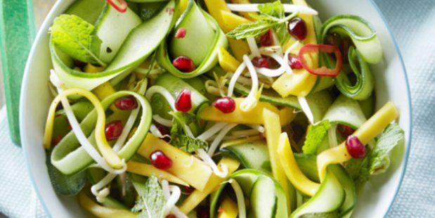

Deze verfrissende komkommersalade met avocado en granaatappel biedt een lichte en smaakvolle tegenhanger voor het gehaktbrood. Het frisse van de komkommer en het romige van de avocado combineren perfect met de knapperige granaatappelpitjes.
1. Plaats de dunne plakjes komkommer in een grote mengkom.
2. Voeg de blokjes avocado, granaatappelpitjes en dun gesneden rode ui toe.
3. Strooi de fijngehakte munt over de salade.
4. In een aparte kom meng je de olijfolie, het citroensap, zout en peper. Roer goed door elkaar.
5. Giet het olijfolie-citroenmengsel over de salade en hussel voorzichtig om alle ingrediënten te bedekken.
6. Laat de salade even rusten, zodat de smaken goed kunnen intrekken.
Tip Eet met knoflook brood